中国共产党早期北京革命活动纪念馆
北大红楼始建于1916年，1918年落成，是北京大学文学院所在地。这里曾是新文化运动的中心、五四运动的策源地，也是马克思主义在中国早期传播的重要阵地。展览《光辉伟业 红色序章——北大红楼与中国共产党早期革命活动》通过大量珍贵文物、历史图片和场景复原，生动再现了早期中国共产党人为民族独立和人民解放而求索奋斗的峥嵘岁月。
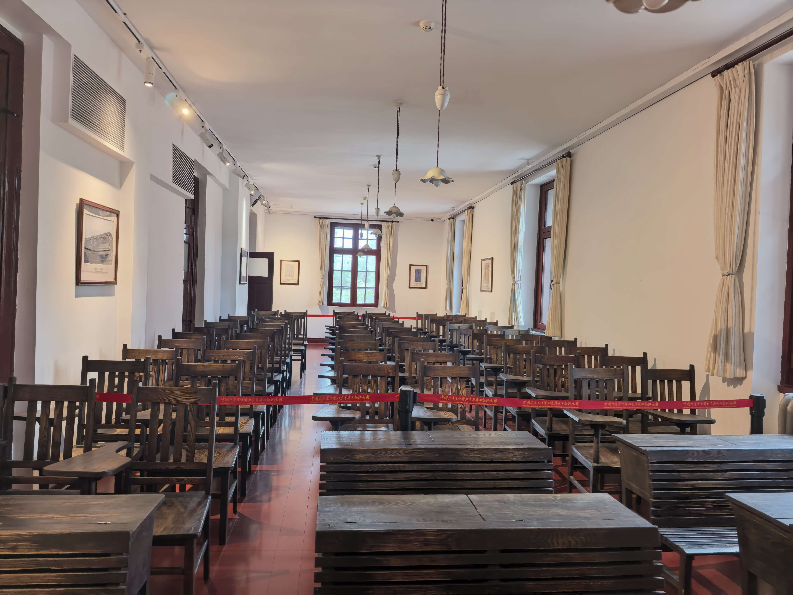
历史时间线
从新文化运动兴起到中国共产党诞生，北大红楼见证了中国近代思想史上最伟大的觉醒。
新文化运动兴起
陈独秀在上海创办《青年杂志》（后改名《新青年》），高举民主与科学两面大旗，猛烈抨击封建旧思想、旧文化、旧礼教，一场前所未有的思想启蒙运动由此发端。
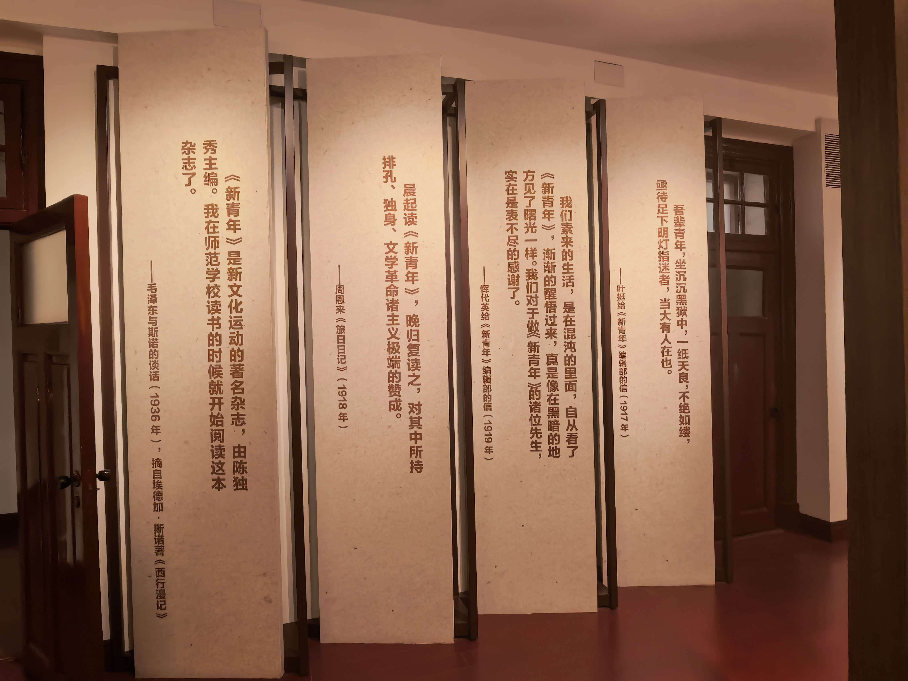
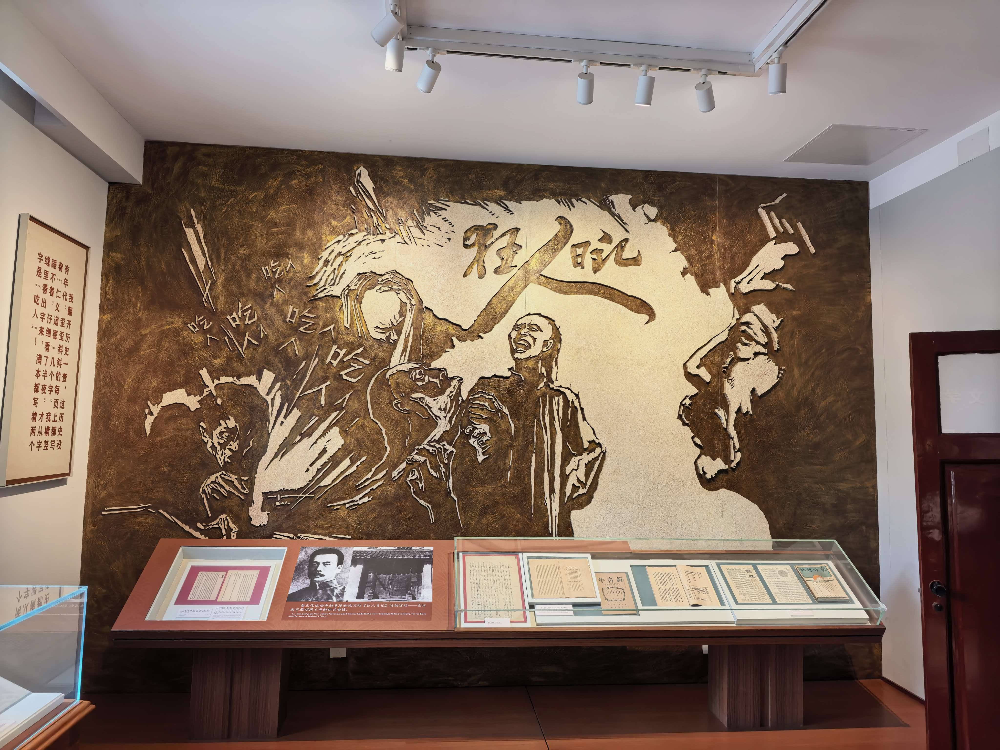
蔡元培改革北大
蔡元培出任北京大学校长，提出"思想自由，兼容并包"的办学方针，聘请陈独秀、李大钊、胡适、鲁迅等新派学者任教，使北大成为新文化运动的中心和五四运动的策源地。
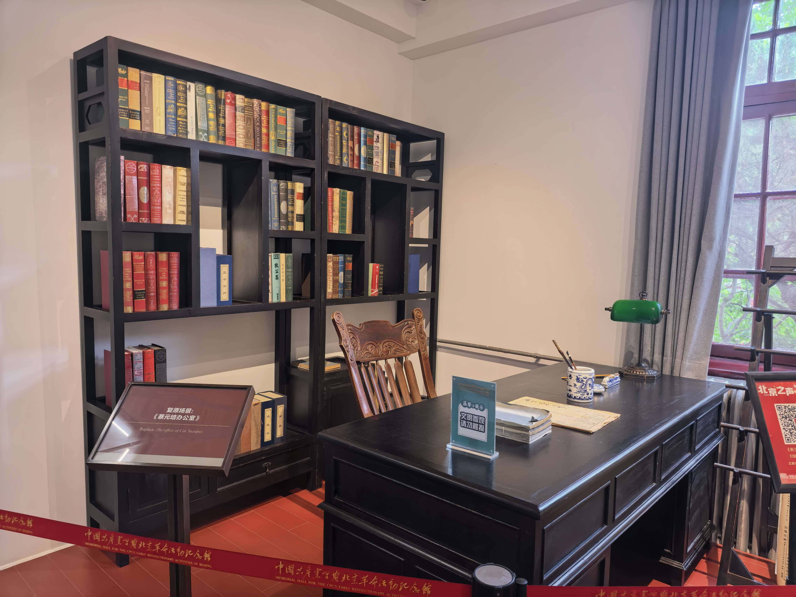
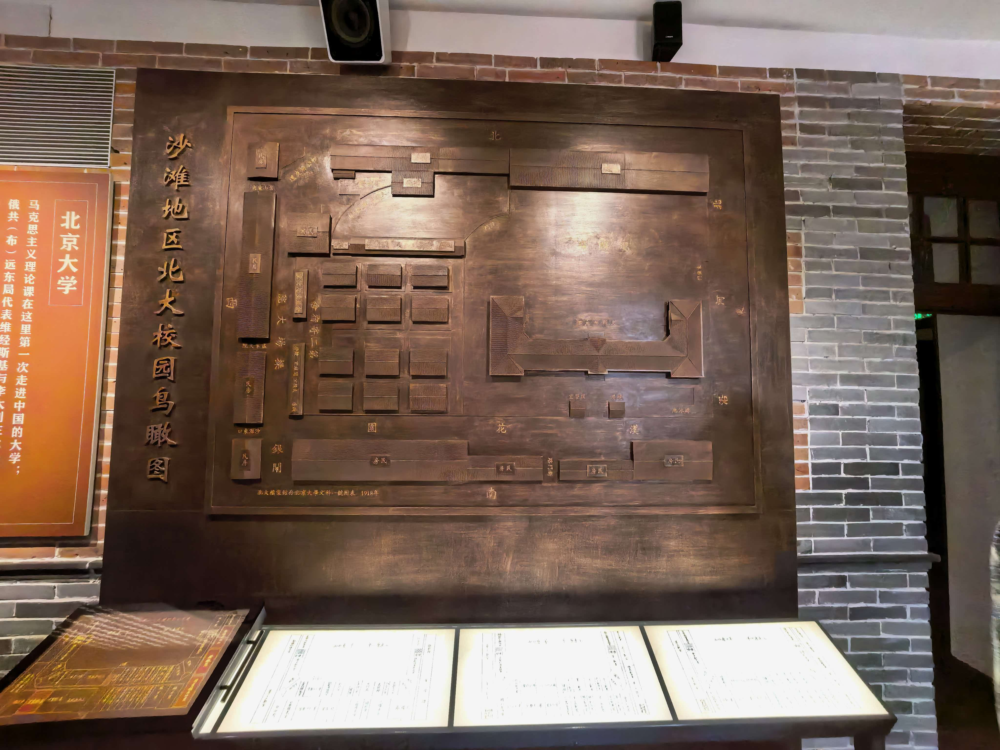
红楼落成
北京大学红楼正式落成，成为北京大学校部、文科和图书馆所在地。北大图书馆主任李大钊在这里传播马克思主义，进步青年毛泽东曾在此担任北京大学图书馆助理员。

五四运动爆发
巴黎和会中国外交失败的消息传来，北大等校学生从红楼出发，到天安门前集会游行，高呼"外争主权，内除国贼"。五四运动标志着中国新民主主义革命的伟大开端。
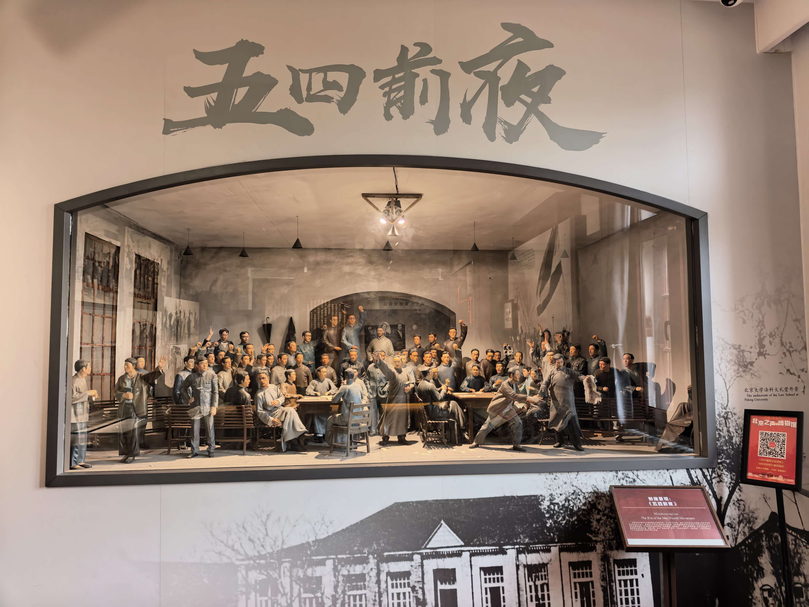
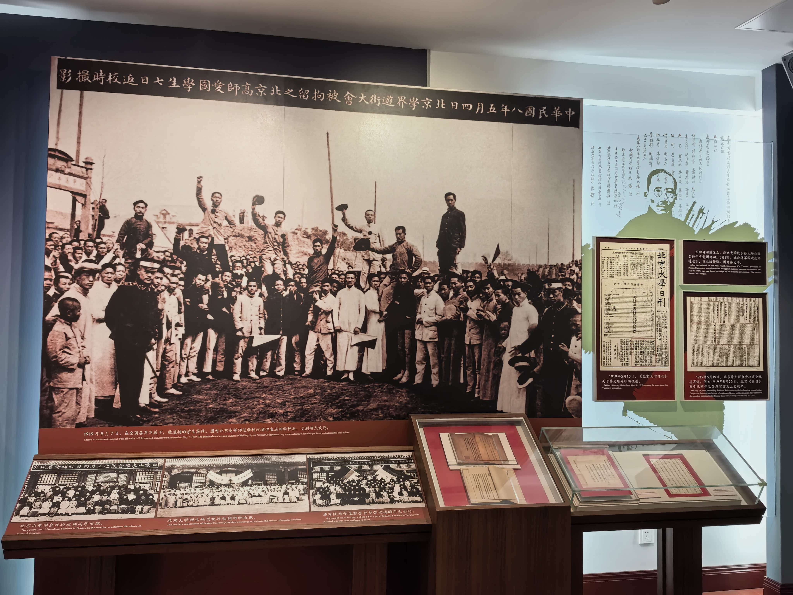
马克思学说研究会
李大钊在北大秘密发起成立马克思学说研究会，这是我国最早学习和研究马克思主义的团体。研究会通过翻译著作、组织讨论、创办刊物，为马克思主义在中国的广泛传播奠定了基础。
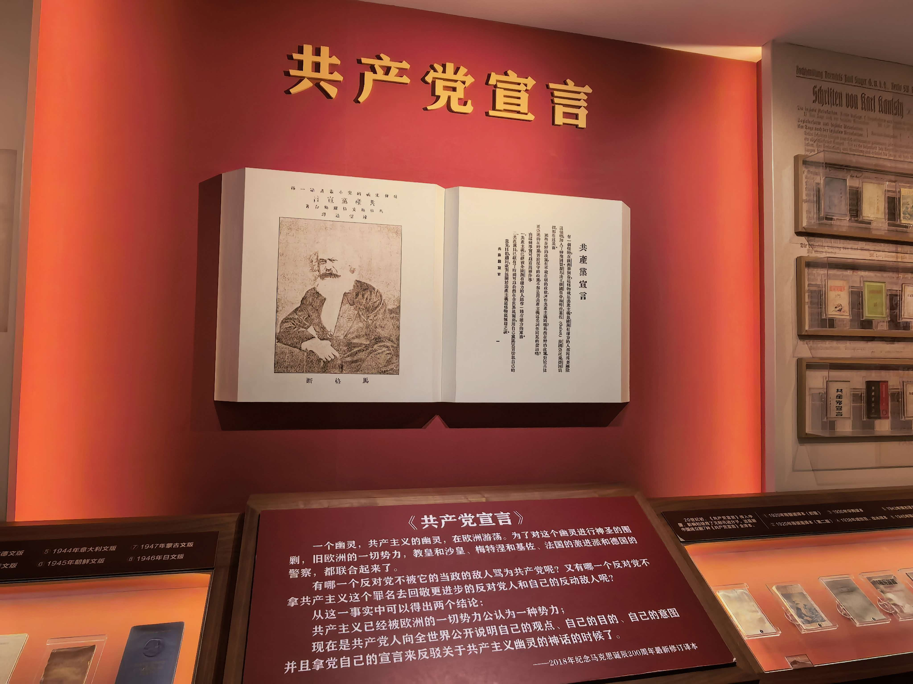
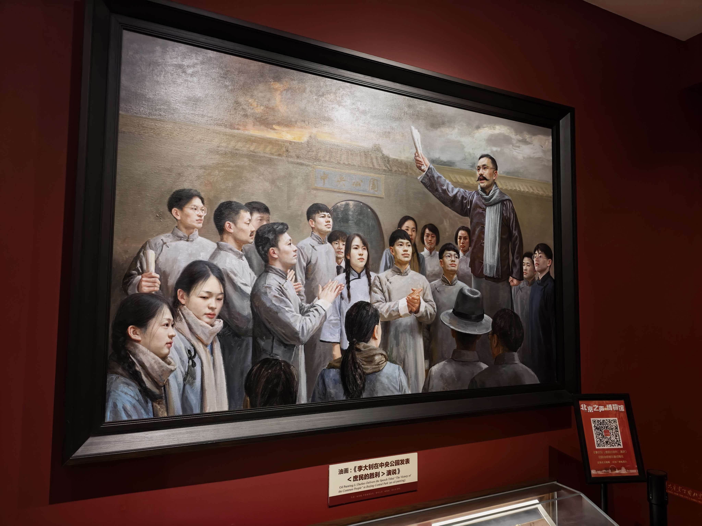
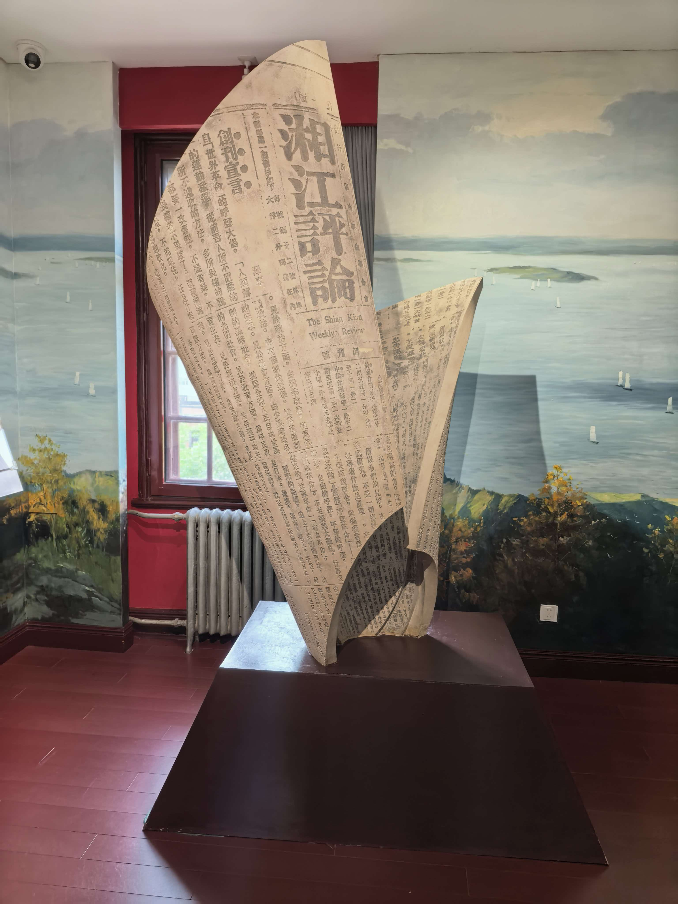
中国共产党成立
以北大红楼为重要活动据点的早期共产主义者，积极筹备并参与创建中国共产党。1921年7月，中国共产党第一次全国代表大会在上海召开，中国革命的面貌从此焕然一新。
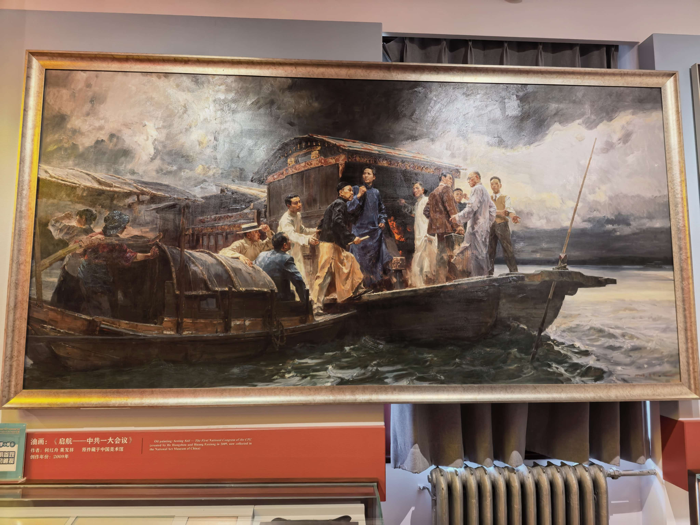
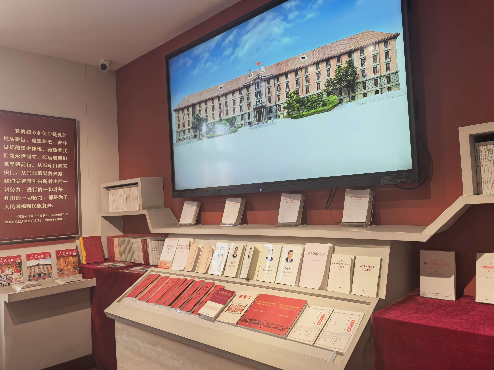
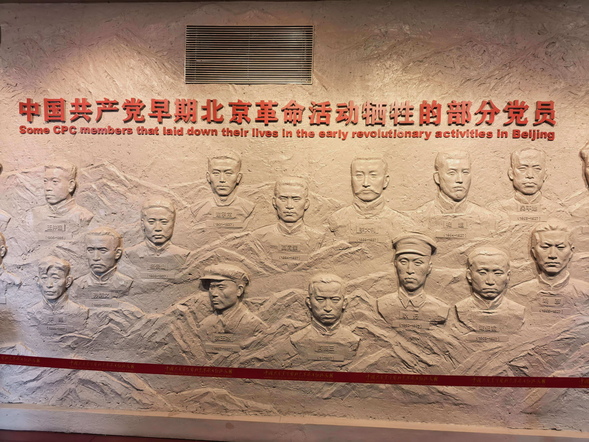
青年实践感悟
走进北大红楼，仿佛穿越回百年前那个风云激荡的年代。红砖灰瓦间，我看到的不只是一栋建筑，更是一代青年为民族觉醒而呐喊的身影。陈独秀、李大钊、鲁迅……他们用笔墨点燃思想火炬；五四青年用游行诠释家国担当。作为新时代大学生，我们更应传承这份"爱国、进步、民主、科学"的精神，把个人理想融入国家发展，以青春之我，担时代之责。